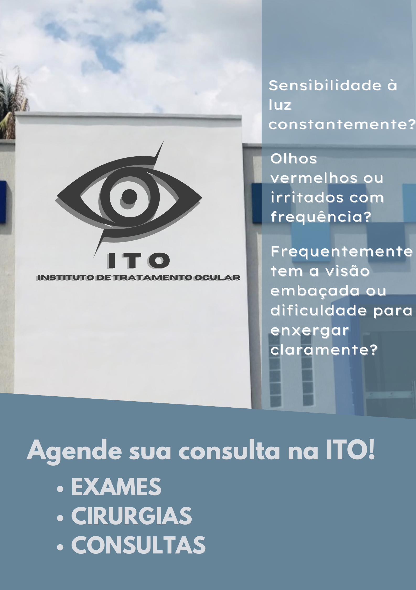

Conheça a nossa clínica
Estamos localizados em um ponto estratégico de São Paulo, com fácil acesso e estrutura moderna para atender você com o melhor da oftalmologia.


Estamos localizados em um ponto estratégico de São Paulo, com fácil acesso e estrutura moderna para atender você com o melhor da oftalmologia.